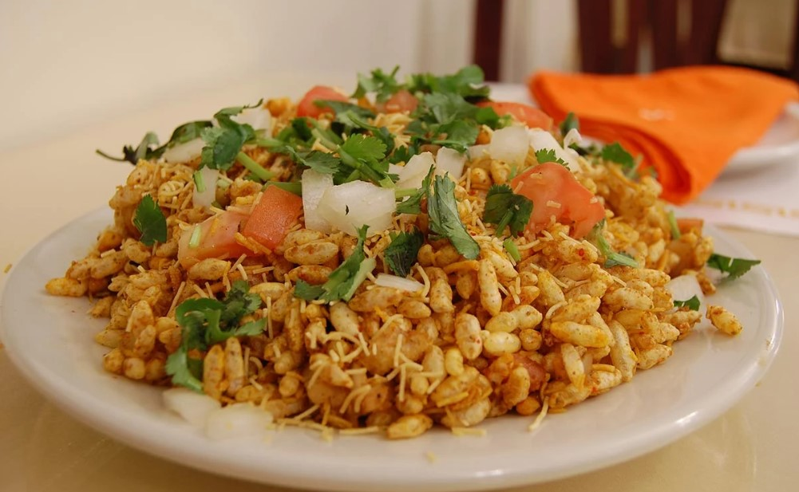

Bhelpuri
Descripción
Originaria de las calles bulliciosas de Mumbai, la Bhelpuri es una ensalada crujiente y picante que combina ingredientes como arroz inflado, fideos, verduras frescas, chutney de tamarindo y una mezcla especial de especias indias. El resultado es un plato refrescante y lleno de sabor que satisface tanto el hambre como el paladar. La Bhelpuri es más que una simple comida; es una experiencia culinaria que te sumerge en la cultura y la tradición de la India. Ya sea que la disfrutes en un carrito callejero en Mumbai o la prepares en casa, esta delicia es una forma deliciosa de explorar los ricos sabores de la India. En nuestra página dedicada a la Bhelpuri, te llevaremos a un viaje a través de su historia, te enseñaremos a prepararla y te mostraremos cómo personalizarla según tus preferencias. ¡Prepárate para un festín de sabores y una inmersión en la magia culinaria de la India con la Bhelpuri!
Ingredientes:
- 2 tazas de arroz inflado (puedes usar puffed rice, conocido como murmura en hindi)
- 1 taza de sev (fideos crujientes de garbanzo)
- 1/2 taza de cebolla, picada finamente
- 1/2 taza de tomate, picado finamente
- 1/2 taza de pepino, picado en cubos pequeños
- 1/2 taza de pimiento verde, picado en cubos pequeños
- 1/2 taza de pimiento rojo, picado en cubos pequeños
- 1/4 de taza de cilantro fresco, picado
- 1/4 de taza de menta fresca, picada
- 1/4 de taza de tamarindo chutney (disponible en tiendas de comida india)
- 2 cucharadas de jugo de limón
- 1 cucharadita de comino en polvo
- 1/2 cucharadita de chile rojo en polvo (ají)
- Sal al gusto
- Galletas de arroz (opcional, para decorar)
Modo de Preparación:
- En un tazón grande, combina el arroz inflado y los sev.
- Agrega las cebollas picadas, los tomates, los pepinos y los pimientos verdes y rojos picados. Mezcla bien todos estos ingredientes.
- Añade cilantro fresco picado y menta fresca picada a la mezcla. Esto agregará frescura al Bhelpuri.
- Agrega tamarindo chutney al gusto. El chutney le dará el característico sabor agridulce al Bhelpuri. Puedes ajustar la cantidad según tu preferencia de sabor.
- Exprime el jugo de limón fresco sobre la mezcla para darle un toque cítrico.
- Espolvorea comino en polvo, chile rojo en polvo y sal al gusto. Mezcla bien todos los ingredientes para asegurarte de que los sabores se integren.
- Sirve el Bhelpuri en platos individuales y decora con galletas de arroz si lo deseas.